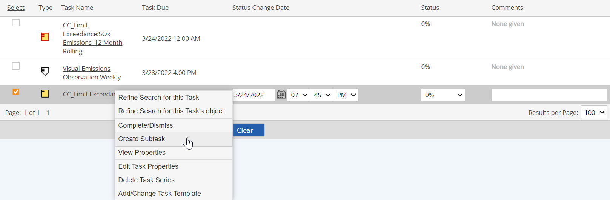
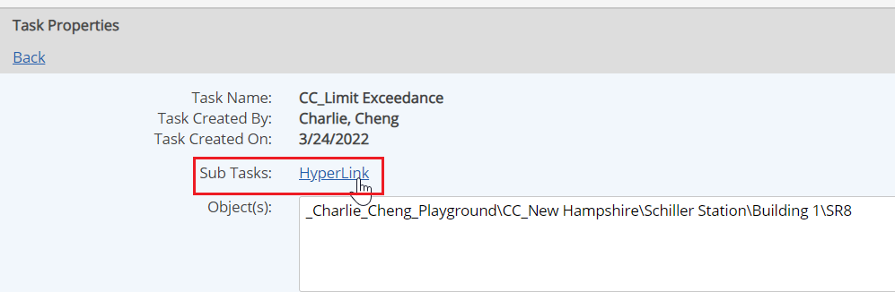

Subtasks may be used to link tasks in some simple scenarios. Subtasks may only be created for a task that has only one occurrence and is associated with only one object. This includes event tasks, as there is only one task per instance, as long as the event monitors only one object.
Only one level of subtasks is allowed on a parent task. Subtasks may not have their own subtasks. For a more detailed solution, consider using a workflow.
To create a subtask:
In Task Manager (Setup > Tasks and Workflows > Tasks), find the parent task for which you want to create a subtask.
If the subtask is for an event task, right click the event object in the Requirements view and choose Tasks. In the Search pane, choose Tasks I May View and set the Start Date in the Search to the due date for the parent task.
Right click the task and from the popup menu select Create Subtask.

Complete the task information, as for a single-occurrence task. See Create New Tasks.
The due date of a subtask cannot be later than the due date of the parent task. The due date is checked for validity when the task is created or edited.
After a subtask is created, a link to the parent or child tasks appears on the task properties screen.

By default, parent tasks are set to complete automatically once all subtasks are complete.
Auto-Complete means that when all subtasks are complete, the parent task is automatically completed. The completion information of the subtask(s) will be rolled into the completion information for the parent task as follows:
The roll up of comments is limited to the number of characters available in the Comment field; therefore, subtask comments may be truncated in the parent task Comment field if the total characters in the subtask comments exceed the available space. Also, HTML format does not recognize line spaces or paragraphs. To distinguish comments by the subtask assignees, it is suggested that the assignees use initials and/or symbols, such as a series of dots at the end of their comments.
You can change parent tasks to manual complete mode if you want the parent task to be completed manually.
To change the completion mode for a parent task with subtasks, right click the link to the parent task and select Set Manual-Complete.